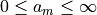
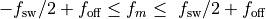
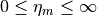
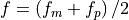

nmrespy.nlp¶
Nonlinear programming for generating parameter estiamtes.
MWE¶
import numpy as np
from numpy.random import uniform
from nmrespy import ExpInfo
from nmrespy.nlp import NonlinearProgramming
np.set_printoptions(
formatter={"float": lambda x: f"{x:.5f}"}
)
expinfo = ExpInfo(
dim=1,
sw=1000.0,
sfo=400.0,
nuclei="1H",
default_pts=4096,
)
parameters = np.array(
[
[1, 0, 300, 1],
[2, 0, 290, 1.1],
[1, 0, 280, 1],
[1, 0, -150, 1],
[3, 0, -155, 1.2],
[3, 0, -160, 1.2],
[1, 0, -165, 1],
]
)
# Make FID with SNR of 30dB
fid = expinfo.make_fid(parameters, snr=30.0)
# Add noise to parameter array for initial guess
initial_guess = parameters + uniform(low=-0.5, high=0.5, size=parameters.shape)
# Optimise parameters using the Gauss-Newton method (default method)
nlp = NonlinearProgramming(
expinfo,
fid,
initial_guess,
)
result = nlp.get_result("hz")
errors = nlp.get_errors("hz")
print(f"Result:\n{result}\nErrors:\n{errors}")
# Ensure that every parameter is at least within 0.01 of its True value
assert np.allclose(parameters, result, atol=1e-2)
# --- Output ---
#
# Result:
# [[0.99669 -0.00051 300.00017 0.99671]
# [2.00048 -0.00083 290.00006 1.09946]
# [0.99956 -0.00069 279.99916 0.99938]
# [0.99962 -0.00070 -150.00034 0.99706]
# [3.00004 -0.00046 -154.99967 1.20114]
# [3.00037 -0.00023 -159.99970 1.20171]
# [1.00073 -0.00039 -164.99948 0.99820]]
# Errors:
# [[0.00277 0.00278 0.00063 0.00394]
# [0.00291 0.00146 0.00036 0.00227]
# [0.00278 0.00278 0.00063 0.00395]
# [0.00280 0.00280 0.00063 0.00395]
# [0.00310 0.00103 0.00028 0.00174]
# [0.00310 0.00103 0.00028 0.00174]
# [0.00280 0.00280 0.00063 0.00396]]
- class nmrespy.nlp.NonlinearProgramming(expinfo, data, theta0, *, start_time=None, phase_variance=True, method='gauss-newton', bound=False, max_iterations=None, mode='apfd', amp_thold=None, freq_thold=None, negative_amps='remove', fprint=True)[source]¶
Object to facilitate numerical optimisation of NMR signal parameters.
- Parameters
expinfo (ExpInfo) – Experiment information.
data (ndarray) – Signal to be considered.
theta0 (ndarray) –
Initial parameter guess in the following form:
1-dimensional data:
theta0 = numpy.array([ [a_1, φ_1, f_1, η_1], [a_2, φ_2, f_2, η_2], ..., [a_m, φ_m, f_m, η_m], ])
2-dimensional data:
theta0 = numpy.array([ [a_1, φ_1, f1_1, f2_1, η1_1, η2_1], [a_2, φ_2, f1_2, f2_2, η1_2, η2_2], ..., [a_m, φ_m, f1_m, f2_m, η1_m, η2_m], ])
start_time (Optional[Iterable[int]]) – The start time in each dimension. If set to
None, the initial point in each dimension with be0.0. To set non-zero start times, a list of floats or strings can be used. If floats are used, they specify the start time in each dimension in seconds. Alternatively, strings of the formr"\d+dt", may be used, which indicates a cetain multiple of the difference in time between two adjacent points.phase_variance (bool) – Specifies whether or not to include the variance of oscillator phases into the NLP routine.
method (str) –
Specifies the optimisation method.
"exact"Uses SciPy’s trust-constr routine The Hessian will be exact."gauss-newton"Uses SciPy’s trust-constr routine The Hessian will be approximated based on the Gauss-Newton method"lbfgs"Uses SciPy’s L-BFGS-B routine.
bound (bool) –
Specifies whether or not to bound the parameters during optimisation. Bounds are given by:





max_iterations (Optional[int]) – A value specifiying the number of iterations the routine may run through before it is terminated. If
None, the default number of maximum iterations is set (100ifmethodis"exact"or"gauss-newton", and500if"method"is"lbfgs").mode (str) – A string containing a subset of the characters
"a"(amplitudes),"p"(phases),"f"(frequencies), and"d"(damping factors). Specifies which types of parameters should be considered for optimisation.amp_thold (Optional[float]) – A value that imposes a threshold for deleting oscillators of negligible ampltiude. If
None, does nothing. If a float, oscillators with amplitudes satisfying will be
removed from the parameter array, where
will be
removed from the parameter array, where  is the Euclidian norm of the vector of
all the oscillator amplitudes. It is advised to set
is the Euclidian norm of the vector of
all the oscillator amplitudes. It is advised to set amp_tholdat least a couple of orders of magnitude below 1.freq_thold (Optional[float]) –
If
None, does nothing. If a float, oscillator pairs with frequencies satisfying will be
removed from the parameter array. A new oscillator will be included
in the array, with parameters:
will be
removed from the parameter array. A new oscillator will be included
in the array, with parameters:amplitude:

phase:

frequency: 
damping:

Warning
NOT IMPLEMENTED YET
negative_amps (str) –
Indicates how to treat oscillators which have gained negative amplitudes during the optimisation.
"remove"will result in such oscillators being purged from the parameter estimate. The optimisation routine will the be re-run recursively until no oscillators have a negative amplitude."flip_phase"will retain oscillators with negative amplitudes, but the the amplitudes will be multiplied by -1, and a π radians phase shift will be applied.
fprint (bool) – If
True, the method provides information on progress to the terminal as it runs. IfFalse, the method will run silently.
- Return type
None
- get_errors(funit='hz', sort_by='f-1')¶
Returns the estimation result errors.
Note
The errors are sorted according to how their respective parameters are sorted.
- Parameters
funit (str) – The unit to express the frequencies in. Must be
"hz"or"ppm".sort_by (str) – Specifies the parameter by which the oscillators are ordered by. Should be one of
"a"for amplitudes"p"for phase,"f<n>"for frequency in the<n>-th dimension,"d<n>"for the damping factor in the<n>-th dimension. By setting<n>to-1, the final (direct) dimension will be used. For 1D data,"f"and"d"can be used to specify the frequency or damping factor.
- Return type
ndarray
- get_params(funit='hz', sort_by='f-1')¶
Returns the estimation result parameters.
- Parameters
funit (str) – The unit to express the frequencies in. Must be
"hz"or"ppm".sort_by (str) – Specifies the parameter by which the oscillators are ordered by. Should be one of
"a"for amplitudes"p"for phase,"f<n>"for frequency in the<n>-th dimension,"d<n>"for the damping factor in the<n>-th dimension. By setting<n>to-1, the final (direct) dimension will be used. For 1D data,"f"and"d"can be used to specify the frequency or damping factor.
- Return type
ndarray